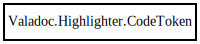

Valadoc.Highlighter.CodeToken – valadoc Reference Manual
Packages
valadoc
Valadoc
Highlighter
CodeToken
content
token_type
CodeToken
_content
_token_type
CodeToken
Object Hierarchy:

Description:
public
class
CodeToken
Namespace:
Valadoc.Highlighter
Package:
valadoc
Content:
Properties:
public
string
content
{
get
;
private
set
; }
public
CodeTokenType
token_type
{
get
;
private
set
; }
Creation methods:
public
CodeToken
(
CodeTokenType
type,
string
content)
Fields:
private
string
_content
private
CodeTokenType
_token_type